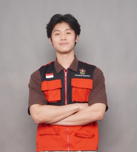
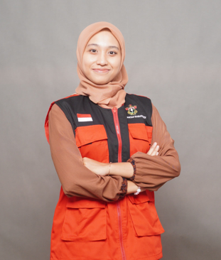
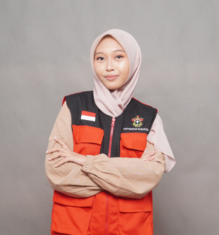
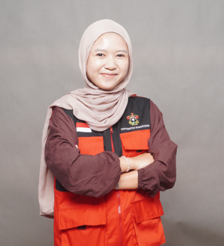
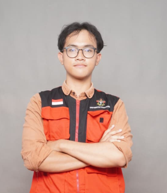
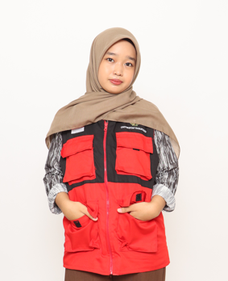

Dr. Rahayu Nurul Reski, S.Si
NIP. 19951128 202412 4001

Alvaryo Liandy
NIM. C011231143

Andira Maharani
NIM. H021231025

Dini Hafizhah Isfa
NIM. K021231028

Diva Alia Talattaf
NIM. J011231121

Abidah Khaerunnisa
NIM. R011231076

Shinrei Fattahurizky
NIM. C031231076

RISKA
NIM. K011231216